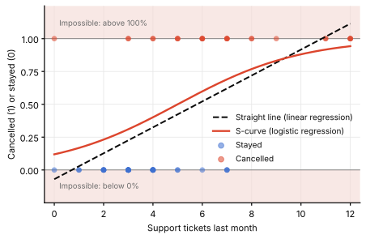
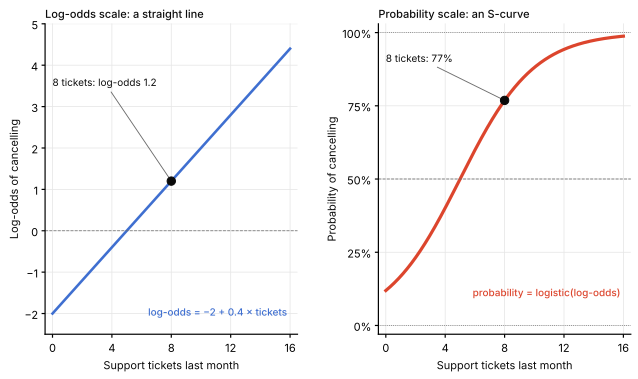
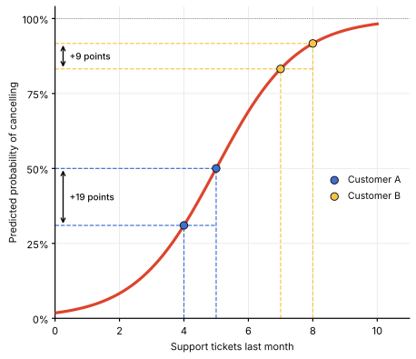
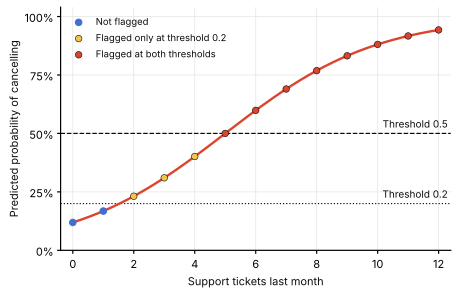
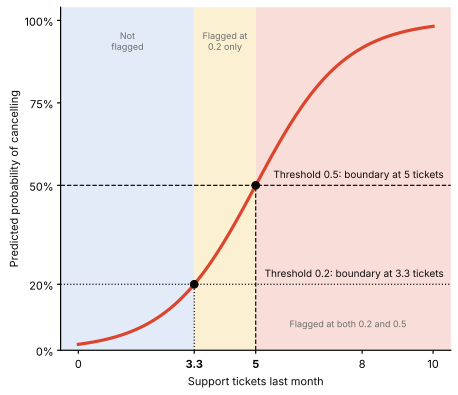

Classification
Logistic Regression
What if the outcome you want to predict is not a number, but a yes or no?
A customer either cancels a subscription or stays. A transaction either defaults or does not. A patient either develops a condition or does not.
Logistic regression is designed for exactly these kinds of questions. Instead of predicting the outcome directly, it estimates the probability of an event occurring, giving us a value between 0 and 1 that can be used to make a yes-or-no decision.
In this post, we use a simple customer churn example with one predictor: the number of support tickets a customer opened last month. It builds on Simple Linear Regression and the framework introduced in Generalized Linear Models.
In this article
- Why a Straight Line Fails for Yes/No Outcomes
- From Probability to Logit: How Logistic Regression Works
- Interpreting Coefficients: Maximum Likelihood and Odds Ratios
- From Probability to Prediction: Thresholds and Decision Boundaries
- Assumptions and Common Pitfalls
- Evaluating a Logistic Regression Model
- How to explain it to stakeholders
Why a Straight Line Fails for Yes/No Outcomes
Imagine a subscription company approaching a customer's renewal date. The company wants to know: Will this customer renew their subscription or cancel?
The answer has only two possible outcomes: stay or cancel. The company also knows how many support tickets the customer opened last month. Could this information help predict whether they will leave?
Ordinary linear regression is not designed for this kind of prediction.
Logistic regression addresses two limitations of ordinary linear regression:
- Predictions stay within valid probability limits. A straight line can produce values below 0 or above 1, while logistic regression estimates probabilities between 0 and 1.
- The relationship can be nonlinear. The probability of cancellation may rise slowly at first, increase sharply across a middle range, and then level off. Logistic regression captures this pattern with an S-shaped curve, also called a sigmoid curve (Chart 1).

From Probability to Logit: How Logistic Regression Works
Understanding Odds and Logit
- Odds: The ratio of the probability that an event occurs to the probability that it does not occur.
Odds = p1 − p
- Log-odds (logit): The logarithm of the odds.
logit(p) = log( p1 − p )
- The logistic regression model: It models the logit as a linear combination of the independent variables and their coefficients.
logit(p) = β0 + β1X1 + β2X2 + ⋯ + βnXn
From Probability to Logit
The key idea is that logistic regression still uses a linear model, but it models the logit rather than the probability directly.
The general formula is:
logit(p) = log( p1 − p ) = β0 + β1X1 + β2X2 + ⋯ + βnXn
Here, p is the probability of the event occurring, the X's are the predictors, and the β's are the coefficients estimated from the data. The intercept β0 represents the logit when all predictors equal zero, while each coefficient describes how the logit changes when its predictor increases by one unit, holding the other predictors constant.
In our churn example, we use just one predictor: the number of support tickets opened last month. Our illustrative model is:
logit(p) = −4 + 0.8X
The coefficients −4 and 0.8 are estimated from historical customer data during model training.
- −4 is the intercept: the predicted logit of cancellation for a customer with zero support tickets.
- 0.8 is the slope: each additional ticket increases the predicted logit of cancellation by 0.8.
Let's calculate the prediction for a customer with six support tickets.
Step 1: Calculate the logit
−4 + 0.8 × 6 = 0.8
Step 2: Convert the logit into odds
odds = elogit = e0.8 ≈ 2.23
The odds of cancellation are approximately 2.23 to 1.
Step 3: Convert odds into probability
p = odds1 + odds = 2.231 + 2.23 ≈ 0.69
The predicted probability of cancellation is approximately 69%.
Why model the logit in the first place? Probabilities are restricted to values between 0 and 1, whereas the logit can take any real value. This allows logistic regression to model a linear relationship and then transform the result back into a valid probability using the logistic function:
p = 11 + e−logit(p)
The result is the familiar S-shaped curve: a straight line on the logit scale becomes a nonlinear relationship on the probability scale.
| Support tickets | Logit | Probability of cancellation |
|---|---|---|
| 0 | −4.0 | 2% |
| 3 | −1.6 | 17% |
| 5 | 0.0 | 50% |
| 6 | 0.8 | 69% |
| 8 | 2.4 | 92% |
When the logit equals zero, the odds are 1 to 1, corresponding to a probability of 50%. A positive logit indicates that cancellation is more likely than staying; a negative logit indicates the opposite.

Logistic regression models the relationship between independent variables and the probability of a binary outcome by fitting a linear relationship to the logit and transforming the result into a probability between 0 and 1.
The Logistic (Sigmoid) Function
The logistic function, also known as the sigmoid function in logistic regression, transforms the model's logit into a predicted probability between 0 and 1. Its characteristic S-shaped curve reflects how changes in the logit translate into changes in probability.
σ(z) = 11 + e−z
Interpreting Coefficients: Maximum Likelihood and Odds Ratios
Model Fitting Using Maximum Likelihood Estimation (MLE)
Imagine we know how many support tickets each customer opened last month and whether they cancelled their subscription or stayed. How can we find the coefficients that best fit these observations?
Maximum Likelihood Estimation (MLE) finds the coefficient values that make the observed outcomes most likely under the logistic regression model.
For example, suppose the estimated model is:
Logit = −4 + 0.8 × support tickets
MLE evaluates how well different coefficient values explain the observed outcomes. A model receives a higher likelihood when it assigns high probabilities to customers who actually cancelled and low probabilities to those who stayed. MLE uses numerical optimization to find the coefficient values that maximize the likelihood of the entire dataset.
Interpreting Logistic Regression Coefficients
Each coefficient represents the change in the logit of the outcome for a one-unit increase in the corresponding predictor, holding other variables constant.
However, the logit is not particularly intuitive. To make the coefficients easier to interpret, we can exponentiate them to obtain odds ratios:
Odds Ratio = eβ β is the predictor's coefficient. eβ is the factor by which the odds change per one-unit increase.
The odds ratio tells us how the odds of the outcome change when a predictor increases by one unit:
- Odds ratio > 1: The odds of the outcome increase.
- Odds ratio < 1: The odds of the outcome decrease.
- Odds ratio = 1: The odds remain unchanged.
Example: In our model, the coefficient for support tickets is 0.8. The corresponding odds ratio is:
e0.8 ≈ 2.23
This means that each additional support ticket multiplies the odds of cancellation by approximately 2.23. For example, if a customer’s odds are 1 to 1, one more ticket raises them to 2.23 to 1. That is an increase of about 123% (2.23 − 1 = 1.23), holding other variables constant.
Odds Ratio vs. Change in Probability
The same change in odds does not produce the same change in probability.
Imagine two customers:
- Customer A: When they go from 4 to 5 support tickets, their odds of cancellation increase from about 0.45 to 1.00 (× 2.23), so their probability rises from 31% to 50%.
- Customer B: When they go from 7 to 8 support tickets, their odds increase from about 4.95 to 11.02 (× 2.23), so their probability rises from 83% to 92%.
Why is the increase smaller for Customer B?
Customer B already has a high probability of cancellation. There is less room for the probability to increase before reaching 100%. Customer A starts at a lower probability, so the same change in odds produces a larger increase in probability.

This illustrates an important feature of logistic regression: each additional support ticket has the same effect on the logit, but its effect on probability depends on the customer's starting point.
From Probability to Prediction: Thresholds and Decision Boundaries
Logistic regression predicts the probability of an outcome, but a business often needs a concrete action: should the retention team contact a customer who may cancel their subscription?
This is where a decision threshold comes in. It converts a predicted probability into a classification.
With a threshold of 0.5, customers with a predicted probability of at least 50% are classified as likely to cancel. In our example, a customer with eight support tickets has a predicted cancellation probability of 92% and is classified as likely to cancel, while a customer with three tickets has a probability of approximately 17% and is not. With this model, a threshold of 0.5 means classifying customers with five or more tickets as likely to cancel (Chart 4).
However, 0.5 is a common default, not a universal rule. The appropriate threshold depends on the business objective and the costs of different mistakes.
Suppose losing a customer costs the company ten times as much as making a retention offer. Missing a customer who eventually cancels may then be much more expensive than contacting someone who would have stayed. A lower threshold, such as 0.2, might be more appropriate because it identifies more customers as potential cancellation risks.
The retention team can then flag these customers for follow-up, prioritizing them for a possible retention offer.

The ticket count where the predicted probability crosses a threshold is called the decision boundary. Customers on one side of it are flagged, and customers on the other side are not. For a threshold of 0.5, the boundary is at 5 tickets, where the logit equal 0 (Chart 5).

Lowering the threshold generally identifies more potential churners, but it also increases the number of customers contacted unnecessarily.
These mistakes have names:
- False positive: The model flags a customer who would have stayed.
- False negative: The model fails to flag a customer who later cancels.
The best threshold depends on the business objective and the relative costs of these errors. Model evaluation helps us compare these trade-offs, which I will cover in a separate post.
Assumptions and Common Pitfalls
Key Assumptions of Binomial Logistic Regression
- There is a linear relationship between each independent variable (X) and the logit (log-odds) of the probability that the dependent variable (Y) equals 1.
- Observations are independent, meaning the probability of observing multiple data points is the product of their individual probabilities.
- There is little to no multicollinearity among independent variables, so they should not be highly correlated.
- There are no extreme outliers in the dataset, as outliers can affect model validity.
Two additional pitfalls are worth watching for.
First, if very few customers cancel, a model that always predicts “stays” may achieve high accuracy while failing to identify the customers the business cares about. This is especially important when evaluating imbalanced datasets.
Second, if a predictor perfectly separates customers who cancel from those who stay, the model may struggle to estimate finite coefficients. This is known as complete separation.
Understanding these limitations helps us avoid treating a model's predictions as automatically reliable.
Evaluating a Logistic Regression Model
Fitting the model is only half the job. Before the retention team relies on the predictions, we need to know how well the model separates customers who cancel from customers who stay. That depends on the threshold we choose. The same model gives different numbers of correct and incorrect classifications at 0.5 and at 0.2.
Metrics such as accuracy, precision, recall and the ROC curve measure these trade-offs. They are the topic of the next post: Common Logistic Regression Metrics.
How to explain it to stakeholders
“In this example, customers with no support tickets last month have an estimated 2% probability of cancelling. At five tickets, the estimated probability reaches 50%, and at eight tickets, it rises to 92%. Each additional ticket multiplies the odds of cancellation by approximately 2.2.
Using a 0.5 threshold, the model flags customers with five or more tickets. The retention team can use this information to prioritize outreach, while evaluating whether this threshold makes sense given the costs of missed cancellations and unnecessary retention offers.”
This explanation connects the statistical model to the business question: Which customers should we prioritize to reduce churn?
Key takeaways
- Logistic regression predicts the probability of a yes/no outcome, always between 0 and 1.
- It is a straight line on the logit scale, converted back into an S-shaped curve.
- e raised to a coefficient is the odds ratio. Here, 2.2 means the odds more than double per extra ticket. It is not a change in probability.
- A threshold turns probabilities into decisions, and the best threshold depends on the business cost of each kind of mistake.
Related posts
- Generalized Linear Models The framework behind linear, logistic and Poisson regression.
- Simple Linear Regression What the line predicts and what its slope and intercept mean.
- Multiple Linear Regression Predicting an outcome from several drivers at once.
- Variable Selection vs. Regularization: Managing Model Complexity Choosing which predictors to keep.